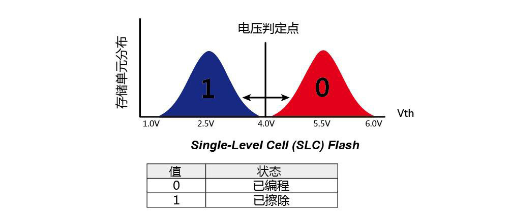
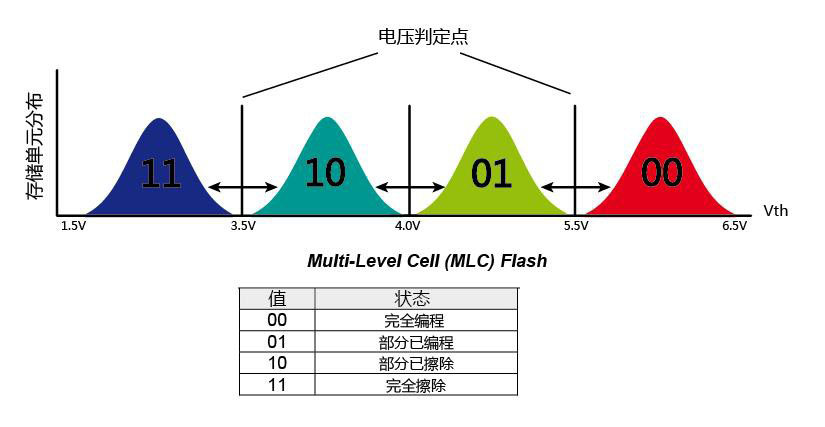
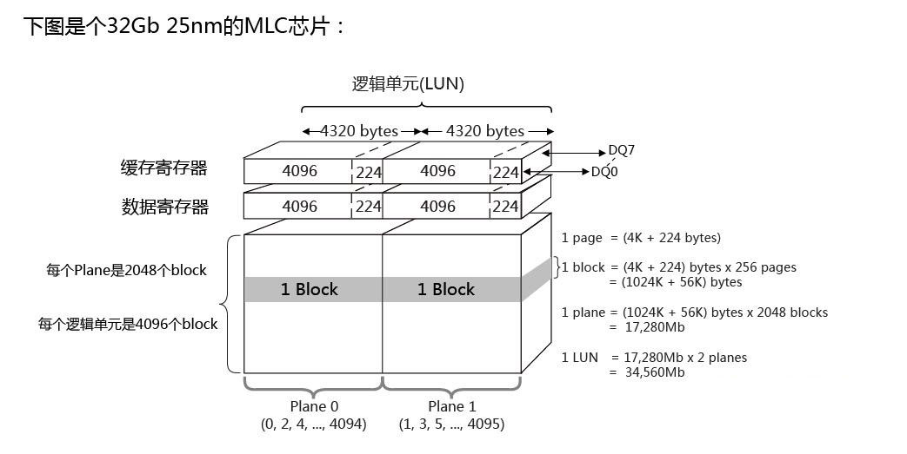
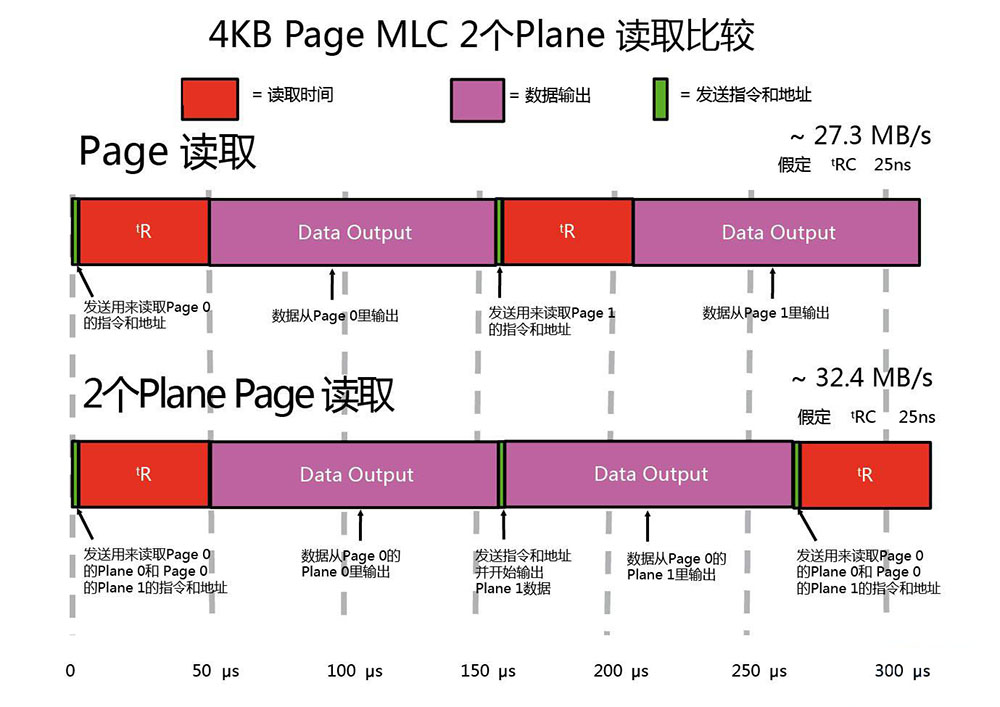
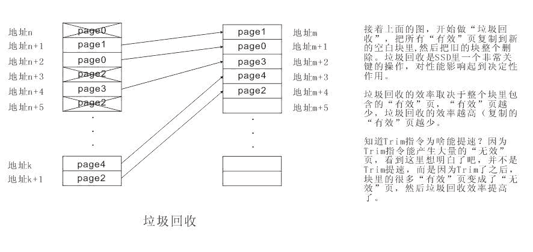
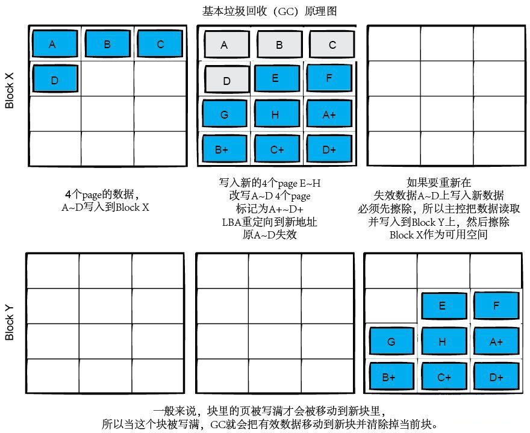
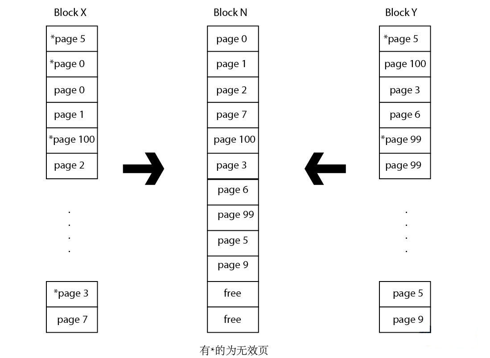
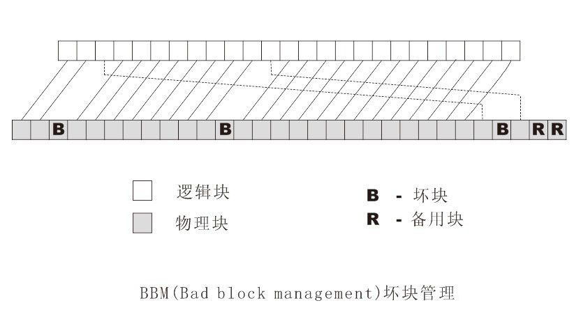
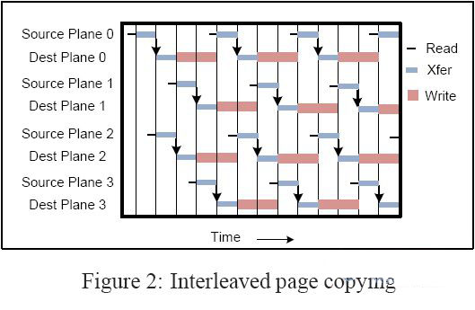

本文作者是一位开源理念的坚定支持者，所以本文虽然不是软件，但是遵照开源的精神发布。
本文作者十分愿意与他人分享劳动成果，如果你对我的其他翻译作品或者技术文章有兴趣，可以在如下位置查看现有的作品集：
由于作者水平有限，因此不能保证作品内容准确无误。如果你发现了作品中的错误(哪怕是错别字也好)，请来信指出，任何提高作品质量的建议我都将虚心接纳。
SSD 的关键部件由控制器和存储单元两部分组成。除此之外，还有缓存和主机接口。
每个 SSD 都有一个控制器(controller)将存储单元连接到电脑。控制器是一个执行固件(firmware)代码的嵌入式处理器。主要功能如下：
很显然，控制器是 SSD 的大脑，而固件的好坏则代表其智商的高低。
尽管有某些厂商推出了基于更高速的 DRAM 内存的产品，但 NAND 闪存依然最常见，占据着绝对主导地位。低端产品一般采用 MLC(multi-level cell) 甚至 TLC(Triple Level Cell) 闪存，其特点是容量大、速度慢、可靠性低、存取次数低、价格也低。高端产品一般采用 SLC(single-level cell) 闪存，其特点是技术成熟、容量小、速度快、可靠性高、存取次数高、价格也高。但是事实上，取决于不同产品的内部架构设计，速度和可靠性的差别也可以通过各种技术加以弥补甚至反转。
基于 NAND 闪存的 SSD 通常带有一个基于 DRAM 的缓存，其作用与普通的机械式硬盘类似，但是还会存储一些诸如 Wear leveling 数据之类的其他数据。把数据先缓存在 DRAM 中，然后集中写入，从而减少写入次数。特例之一是 SandForce 生产的控制器，它并不含有缓存，但是性能依旧很出色，由于其结构简单，故而可以生产体积更小的 SSD，并且掉电时数据更安全。
主机接口与控制器紧密相关，但是通常与传统的机械式硬盘相差不大，主要有以下几种：
主机接口的速度限制了 SSD 所能达到的速度峰值。但是一般这并不是瓶颈所在。
SSD 的性能大致上可以用并行工作的 NAND 闪存芯片数(也称为通道数，目前主流的固态硬盘拥有8~16通道)来衡量。一个单独的 NAND 芯片很慢，但是当多个芯片并行工作时，性能就会得到巨大的提升，其原理类似于 RAID0，买块 SSD 就等于是买了块"阵列卡+盘"。看上去很美是不是？
在2010年由著名的 Xssist 网站使用 IOmeter 对 Intel X25-E 64 GB G1 进行的一项测试中，以 4KB 随机 70%读 + 30%写、队列深度为4，进行持续测试。开始的时候可以达到 10,000 IOPS ，但是性能很快便急速下降，8分钟之后就只剩下 4,000 IOPS 了，而50分钟之后，就稳定在 3,500 IOPS 左右摇摆了。
除了这种短时间可发现的急速性能下降之外，还存在着随时间推移，性能缓慢下降的问题(主要是存储单元老化和损坏所致)。
能否有效的处理性能下降问题不但关系到 SSD 的长期运行的实际性能，而且关系到其寿命(SSD 一旦损坏，其内部的数据将全部丢失，而且基本上是不可恢复的)。因为导致性能下降的原因也和其使用寿命紧密相关。通常，固态硬盘的性能越差意味着它的使用寿命就越短。这是因为固态硬盘的磨损与固态硬盘上发生的数据写入和清除次数直接相关。发生写数据的次数越多，性能就越差，其寿命也就越短。
对传统硬盘，人们常用平均无故障时间(MBTF)来标识其可靠性，现在很多 SSD 制造商借用这个指标来说明 SSD 质量的高低。显然，这样做非常扯淡。事实上，SSD 的寿命与其如何使用有密切关系。比如，Intel 的消费级 SSD X25-M 的 MTBF 为120万个小时，与普通的磁介质大体相当。INTEL 估计，如果每天写入 100GB 数据的话，理论上可以使用5年，不过这个只是理论上的最优情况，实际寿命肯定比这个要短。另一方面，NAND 闪存中的数据最多只可以保存10年左右，也就是说10年是 SSD 的理论最大寿命。值得注意的是，SSD 的使用寿命主要取决于其写入数据的次数，而与读取次数关系不大。有鉴于此，那些以“一次存取，多次查询”为主的应用形式(如搜索引擎、数据仓库)应该是 SSD 最适合的应用场合。
为了弄清楚这些问题，我们必须要进一步了解 SSD 相关的技术信息。
SSD 的基本存储单元分为三类：SLC(Single Level Cell 单层单元) 和 MLC(Multi-Level Cell 多层单元) 以及较新的 TLC(Triple Level Cell 三层单元) 。低端产品一般采用 MLC(multi-level cell) 或者 TLC(Triple Level Cell) 闪存，其特点是功耗高、容量大、速度慢(2MB/S)、可靠性低、存取次数低(3000次[25nm]-1万次[50nm]，制程越先进次数反而越小)、价格也低。高端产品一般采用 SLC(single-level cell) 闪存，其特点是技术成熟、功耗低、容量小、速度快(8MB/S)、可靠性高、存取次数高(10万次)、价格也高。造成这种差异的原因在于，每个 MLC/TLC 存储单元中存放的资料较多，结构相对复杂，出错的几率会增加，必须进行错误修正，这个动作导致其性能和可靠性大幅落后于结构简单的 SLC 闪存。
SLC 就是在每个存储单元里存储 1bit 的数据，存储的数据是0还是1是基于电压阀值的判定，对于 NAND Flash 的写入(编程)，就是控制 Control Gate 去充电(对 Control Gate 加压)，使得浮置栅极存储的电荷够多，超过4V，存储单元就表示 0(已编程)，如果没有充电或者电压阀值低于4V，就表示 1(已擦除)。

MLC 就是每个存储单元里存储 2bit 的数据，存储的数据是"00","01","10","11"也是基于电压阀值的判定，当充入的电荷不足3.5V时，就代表"11"，当充入的电荷在3.5V和4.0V之间，则代表"10"，当充入的电荷在4V和5.5V之间，则表示"01"，当充入的电荷在5.5V以上，则表示"00"。同时由前面的图可以看到，MLC 相比 SLC 虽然使用相同的电压值，但是电压之间的阀值被分成了4份，可以想象这样就直接影响了性能和稳定性。

而 TLC 就更加复杂，因为每个存储单元里存储 3bit 的数据，所以它的电压阈值的分界点就更细致，导致的结果也就每个存储单元的可靠性也更低。由于 TLC 与 MLC 没有本质区别，所以在本文剩余部分就不再提及 TLC 了。
在 NAND Flash 工厂制造处理过程中，厂商把晶元上最好的那部分 Flash 晶片挑选出来并用企业级的标准来检测晶片的数据完整性和耐久度。检测完后，这些晶片被取下来改变内部些许参数并进行之后的比标准 SLC/MLC 更苛刻的测试。当这些晶片通过测试后，就被定义为 eSLC/eMLC 级别组，余下的就成为普通 SLC/MLC 级别组了。
相对普通 SLC/MLC 来说，eSLC/eMLC 的不同之处主要体现在下面4个方面：
早期的闪存产品每个厂家的设计标准各有不同，会碰到各种各样的问题，特别是到了2006年之后，闪存产业市场需求开始发力，造成了迫切需要一个统一的标准来改变这个问题。
由于传统的 Legacy 接口每通道传输带宽为 40MT/s，已经不能满足现今高速发展的 SSD 产品需求。2007年1月，以英特尔，镁光，海力士，意法半导体，力晶为首的 NAND 闪存厂商和控制芯片开发商台湾群联电子以及产品厂商索尼等宣布统一制定连接 NAND 闪存和控制芯片的接口标准"ONFI 1.0"。ONFI 1.0 标准把传统 Legacy 接口每通道传输带宽提升到了 50MT/s，可以说 ONFI 1.0 的目的主要是想着统一接口的设计。
2008年2月，ONFI 2.0 宣布了，ONFI 2.0 的标准使 NAND 闪存的通道传输带宽从 50MT/s 提高到了 133MT/s ，并保持了老版本接口的兼容性。
2009年2月，ONFI 2.1 宣布了，相比 ONFI 2.0 更加简化了闪存控制器设计，并将传输性能提升到 166MT/s ~ 200MT/s 附近。
2009年10月，ONFI 2.2 宣布了，在 ONFI 2.1 的基础上，ONFI 2.2 加入了独立 LUN 重置，增强页编程寄存器的清除，新的 ICC 测量和规范。
2011年3月，ONFI 3.0 宣布了，提升接口带宽到 400MT/s，降低CE针脚需求来提升PCB的布局能力，支持 EZ-NAND(闪存内集成ECC)接口。
2013年7月，ONFI 3.2 宣布了，提升接口带宽到 533MT/s。
另一方面，老牌 NAND 制造厂商三星的接口标准为 OneNAND，而东芝的接口标准为 LBA-NAND，由于这两家全球份额加起来接近70%，不可能让IM(英特尔/镁光新加坡合资NAND厂)这个后起之秀那么嚣张，所以在2007年底，2家老牌 NAND 制造厂商进行了技术上交互式授权，将共享三星的 OneNAND 和东芝的 LBA-NAND 闪存专利技术和品牌的生产、市场和销售权。
2010年6月，三星和东芝宣布了他们的新的 NAND 数据通道接口标准。DDR Toggle Mode 模式，相比传统的异步 NAND 闪存，其接口带宽可从 40MT/s 提升到 133MT/s，DDR Toggle Mode NAND 闪存使用双向DQS生成输入/输出信号，在信号上升沿和下降沿都能进行资料的传输，所以速度可以翻倍。由于还是异步设计，没有改变特定的时钟信号，相对同步设计上会更省电，设计上会也相对简单。
2011年，DDR Toggle Mode 2.0 版宣布，接口带宽增加到了 400MT/s。2011年，三星再次于全球率先量产 400Mbps 传输速度的 64Gb Toggle DDR 2.0 MLC NAND Flash 新品，生产厂商将从2011年下半年开始推出各种基于 64Gb 高速 NAND Flash 的高性能、大容量产品。
预计2015-2017年，我们将迎来 Toggle DDR Mode 3.0 标准，届时带宽将达到800MT/s。
总之，目前 NAND 数据通道接口标准有两大阵营：Intel/Micron 的标准是 ONFI，三星和东芝的标准叫 Toggly 。
多 Plane NAND 是一种能够有效提升性能的设计。多 Plane 的原理很简单，从下图中(Micron 25nm L73A)我们看到，一个晶片内部分成了2个 Plane，而且2个 Plane 内的 Block 编号是单双交叉的，想象我们在操作时，也可以进行交叉操作(一单一双)来提升性能，根据测试，某些情况下性能可以比单 Plane 设计提高约50%以上。

下图中我们看到2个 Plane Page 读取操作相比单个 Page 读取操作每2个 Page 节省了一次 Page 读取时间。同样作为擦除，写入操作的话，2个 Plane 的交叉操作也能带来性能的提升。

操作系统通常将硬盘理解为一连串 512B 大小的扇区[注意：操作系统对磁盘进行一次读或写的最小单位并不是扇区，而是文件系统的块，一般为 512B/1KB/4KB 之一(也可能更大)，其具体大小在格式化时设定]，但是闪存的读写单位是 4KB 或 8KB 大小的页，而且闪存的擦除(又叫编程)操作是按照 128 或 256 页大小的块来操作的。更要命的是写入数据前必须要先擦除整个块，而不能直接覆盖。这完全不符合现有的、针对传统硬盘设计的文件系统的操作方式，很明显，我们需要更高级、专门针对 SSD 设计的文件系统来适应这种操作方式。但遗憾的是，目前还没有这样的文件系统。
为了兼容现有的文件系统，就出现了 FTL(闪存转换层)，它位于文件系统和物理介质之间，把闪存的操作习惯虚拟成以传统硬盘的 512B 扇区进行操作。这样，操作系统就可以按照传统的扇区方式操作，而不用担心之前说的擦除/读/写问题。一切逻辑到物理的转换，全部由 FTL 层包了。
FTL 算法，本质上就是一种逻辑到物理的映射，因此，当文件系统发送指令说要写入或者更新一个特定的逻辑扇区时，FTL 实际上写入了另一个空闲物理页，并更新映射表，再把这个页上包含的旧数据标记为无效(更新后的数据已经写入新地址了，旧地址的数据自然就无效了)。

有了 FTL，我们才能像机械硬盘那样操作 SSD。但是很明显，这种方法有个很大的缺憾：跟踪开销。所以 FTL 的转换速度直接影响 SSD 的读写性能。
简单说来，磨损平衡是确保闪存的每个块被写入的次数相等的一种机制。
通常情况下，在 NAND 块里的数据更新频度是不同的：有些会经常更新，有些则不常更新。很明显，那些经常更新的数据所占用的块会被快速的磨损掉，而不常更新的数据占用的块磨损就小得多。为了解决这个问题，需要让每个块的编程(擦写)次数尽可能保持一致：这就是需要对每个页的读取/编程操作进行监测，在最乐观的情况下，这个技术会让全盘的颗粒物理磨损程度相同并同时报废。
磨损平衡算法分静态和动态。动态磨损算法是基本的磨损算法：只有用户在使用中更新的文件占用的物理页地址被磨损平衡了。而静态磨损算法是更高级的磨损算法：在动态磨损算法的基础上，增加了对于那些不常更新的文件占用的物理地址进行磨损平衡，这才算是真正的全盘磨损平衡。简单点说来，动态算法就是每次都挑最年轻的 NAND 块来用，老的 NAND 块尽量不用。静态算法就是把长期没有修改的老数据从一个年轻 NAND 块里面搬出来，重新找个最老的 NAND 块放着，这样年轻的 NAND 块就能再度进入经常使用区。概念很简单，但实现却非常的复杂，特别是静态。
尽管磨损均衡的目的是避免数据重复在某个空间写入，以保证各个存储区域内磨损程度基本一致，从而达到延长固态硬盘的目的。但是，它对固态硬盘的性能有不利影响。
由前面的磨损平衡机制知道，磨损平衡的执行需要有“空白块”来写入更新后的数据。当可以直接写入数据的“备用空白块”数量低于一个阀值后，SSD主控制器就会把那些包含无效数据的块里的所有有效数据合并起来写到新的“空白块”中，然后擦除这个块以增加“备用空白块”的数量。这个操作就是SSD的垃圾回收。


有三种垃圾回收策略：
闲置垃圾回收：很明显在进行垃圾回收时候会消耗大量的主控处理能力和带宽造成处理用户请求的性能下降，SSD 主控制器可以设置在系统闲置时候做“预先”垃圾回收(提前做垃圾回收操作)，保证一定数量的"备用空白块"，让 SSD 在运行时候能够保持较高的性能。闲置垃圾回收的缺点是会增加额外的"写入放大"，因为你刚刚垃圾回收的"有效数据"，也许马上就会被更新后的数据替代而变成"无效数据"，这样就造成之前的垃圾回收做无用功了。
被动垃圾回收：每个 SSD 都支持的技术，但是对主控制器的性能提出了很高的要求，适合在服务器里用到，SandForce 的主控就属这类。在垃圾回收操作消耗带宽和处理能力的同时处理用户操作数据，如果没有足够强劲的主控制器性能则会造成明显的速度下降。这就是为啥很多 SSD 在全盘写满一次后会出现性能下降的道理，因为要想继续写入数据就必须要边垃圾回收边做写入。
手动垃圾回收：用户自己手动选择合适的时机运行垃圾回收软件，执行垃圾回收操作。
可以想象，如果系统经常进行垃圾回收处理，频繁的将一些区块进行擦除操作，那么 SSD 的寿命反而也会进一步下降。由此把握这个垃圾回收的频繁程度，同时确保 SSD 中的闪存芯片拥有更高的使用寿命，这确实需要找到一个完美的平衡点。所以，SSD 必须要支持 Trim 技术，不然 GC 就显不出他的优势了。
Trim 是一个 ATA 指令，当操作系统删除文件或格式化的时候，由操作系统同时把这个文件地址发送给 SSD 的主控制器，让主控制器知道这个地址的数据无效了。
当你删除一个文件的时候，文件系统其实并不会真正去删除它，而只是把这个文件地址标记为“已删除”，可以被再次使用，这意味着这个文件占的地址已经是“无效”的了。这就会带来一个问题，硬盘并不知道操作系统把这个地址标记为“已删除”了，机械盘的话无所谓，因为可以直接在这个地址上重新覆盖写入，但是到了 SSD 上问题就来了。NAND 需要先擦除才能再次写入数据，要得到空闲的 NAND 空间，SSD 必须复制所有的有效页到新的空闲块里，并擦除旧块(垃圾回收)。如果没有 Trim 指令，意味着 SSD 主控制器不知道这个页是“无效”的，除非再次被操作系统要求覆盖上去。
Trim 只是条指令，让操作系统告诉 SSD 主控制器这个页已经“无效”了。Trim 会减少写入放大，因为主控制器不需要复制“无效”的页(没 Trim 就是“有效”的)到空白块里，这同时代表复制的“有效”页变少了，垃圾回收的效率和 SSD 性能也提升了。
Trim 能大量减少伪有效页的数量，它能大大提升垃圾回收的效率。
目前，支持 Trim 需要三个要素，缺一不可：
目前，RAID 阵列里的盘明确不支持 TRIM，不过 RAID 阵列支持 GC。
NCQ(Native Command Queuing)的意思是原生指令排序。使用 NCQ 技术可以对将要读取的文件进行内部排序，然后对文件的排序做最佳化线路读写，达到提升读写效率的目地。NCQ 最早是 SCSI 的标准之一，只是那时候不叫 NCQ，对这个标准稍作修改后，在 SATA 的应用上就叫做 NCQ 了，SAS 接口也支持 NCQ。SSD 虽然没有机械臂，但是 SSD 有多通道。开启 NCQ 后，SSD 主控制器会根据数据的请求和 NAND 内部数据的分布，充分利用主控制器通道的带宽达到提升性能的目地，所以 NCQ 对 SSD 也有帮助，理想状况下性能提升可达5-10倍。目前原生支持 SATA 的 SSD 都能支持 NCQ。当然，要开启NCQ，必须要使用 AHCI 模式。
预留空间是指用户不可操作的容量，为实际物理闪存容量减去用户可用容量。这块区域一般被用来做优化，包括磨损均衡，GC和坏块映射。
第一层为固定的7.37%，这个数字是如何得出的哪？我们知道机械硬盘和 SSD 的厂商容量是这样算的，1GB 是1,000,000,000字节(10的9 次方)，但是闪存的实际容量是每 GB=1,073,741,824，(2的30次方) ，两者相差7.37%。所以说假设1块 128GB 的 SSD，用户得到的容量是 128,000,000,000 字节，多出来的那个 7.37% 就被主控固件用做OP了。
第二层来自制造商的设置，通常为 0%，7%，28% 等，打个比方，对于 128G 颗粒的 SandForce 主控 SSD，市场上会有 120G 和 100G 两种型号卖，这个取决于厂商的固件设置，这个容量不包括之前的第一层 7.37% 。
第三层是用户在日常使用中可以分配的预留空间，用户可以在分区的时候，不分到完全的 SSD 容量来达到这个目的。不过需要注意的是，需要先做安全擦除(Secure Erase)，以保证此空间确实没有被使用过。

预留空间虽然让 SSD 的可用容量小了，但是带来了减少写入放大、提高耐久性、提高性能的效果。根据经验，预留空间在 20%-35% 之间是最佳平衡点。
因为闪存必须先擦除(也叫编程)才能写入，在执行这些操作的时候，移动或覆盖用户数据和元数据(metadata)不止一次。这些额外的操作，不但增加了写入数据量，减少了SSD的使用寿命，而且还吃光了闪存的带宽，间接地影响了随机写入性能。这种效应就叫写入放大(Write amplification)。一个主控的好坏主要体现在写入放大上。
比如我要写入一个 4KB 的数据，最坏的情况是，一个块里已经没有干净空间了，但是有无效数据可以擦除，所以主控就把所有的数据读到缓存，擦除块，从缓存里更新整个块的数据，再把新数据写回去。这个操作带来的写入放大就是：我实际写4K的数据，造成了整个块(1024KB)的写入操作，那就是256倍放大。同时带来了原本只需要简单的写4KB的操作变成闪存读取(1024KB)，缓存改(4KB)，闪存擦(1024KB)，闪存写(1024KB)，造成了延迟大大增加，速度急剧下降也就是自然的事了。所以，写入放大是影响 SSD 随机写入性能和寿命的关键因素。
用100%随机4KB来写入 SSD，对于目前的大多数 SSD 主控而言，在最糟糕的情况下，写入放大的实际值可能会达到或超过20倍。当然，用户也可以设置一定的预留空间来减少写入放大，假设你有个 128G 的 SSD，你只分了 64G 的区使用，那么最坏情况下的写入放大就能减少约3倍。
许多因素影响 SSD 的写入放大。下面列出了主要因素，以及它们如何影响写入放大。
如前所述，NAND闪存存储的一大缺陷就是需要在写入时对存储结构进行整理，这导致实际上写入的数据比我们真正需要存储的数据量大。在一款比较普通的固态硬盘中，如果你需要写入1GB数据，在盘内结构已经比较混乱(存储、删除、再存储)的情况下，最后真正写入的数据量可能高达10GB甚至20GB。真实写入数据与需要写入数据之比即为“写入放大率”。
DuraWrite是SandForce开发的一种减少SSD写入放大率的技术：写入1GB数据时，最终写进闪存的可能只有500MB甚至更少。根据厂方的测试，安装Windows Vista和Office 2007的全过程共需要写入25GB数据，而使用DuraWrite技术实际写入仅为11GB。所以厂商自称其写入放大率是"0.5"！真是天方夜谭是吧？可能你已经猜到了，奥秘在于SandForce在将数据写入闪存前进行了压缩。不过根据厂方的说法，这并不仅仅是压缩这么简单，而是一套多种多样的数据缩量算法。比如当数据存在重复时，仅写入特殊部分；当数据可压缩时，即进行压缩再存储等。由于写入数据变少，SandForce控制器不需要使用外部DRAM缓存，而是在芯片内直接集成了较大容量的缓存。
这项技术确实可以带来很多优点，特别是性能上。写入的数据少了，相对来说速度自然就翻倍了，而读取操作同样如此。因此，数据库等类似的需要高吞吐量的操作都是可以获得极佳的性能发挥。当然，SandForce标称高达500MB/s的写入速度只是在最好情况下的成绩(数据可以被实时压缩)而已，不可迷信。但这样的技术也有弱点，当需要写入的数据已经进行过压缩时(如图片、视频或压缩文件)，其算法就无法再发挥理想效果。
其实DuraWrite是包含于DuraClass技术之中的一个组件。DuraClass技术包含RAISE、DuraWrite、GC、ECC等技术。RAISE是一项类似于RAID5的功能机制，是一个独立的冗余数组结构，这个功用的主要目标，是在于改进故障机率，保障压缩数据的安全。其实这项技术也是配合DuraWrite技术而运作的。所以可以说DuraWrite是DuraClass技术的关键，也是SandForce系列主控的灵魂。
不管磨损平衡算法如何聪明，在运作中都会碰到一个头痛的问题，那就是坏块，所以一个SSD必须要有坏块管理机制。何谓坏块？一个NAND块里包含有不稳定的地址，不能保证读/写/擦的时候数据的准确性。其概念和传统机械式硬盘的坏块相似。

坏块分出厂坏块和使用过程中出现的坏块，和机械式硬盘的坏块表一样(P表和G表)，SSD也有坏块表。出厂坏块的话，在坏块上会有标记，所以很容易就能被识别，后期使用中出现的坏块就要靠主控制器的能力了，一般来说，越到NAND生命的后期(P/E数开始接近理论最大值)，坏块就会开始大量出现了。NAND出厂前都会被执行擦除操作，厂商会在出货前会把坏块标记出来(厂商会在坏块的第一个页的SA区上打上标记)。这样坏块管理软件就能靠监测SA区标记来制作坏块表。SA区的意思是页中4096~4319的区域，用户不可访问，主要用来存放ECC算法、坏块信息、文件系统资料等。由于在使用中会产生坏块，所以SSD的每次编程/擦除/复制等操作后都要检查块的状态。对颗粒的ECC要求也要达到厂商的标准以上(主控强不强，看ECC能力也是一个参考)。
ECC的全称是Error Checking and Correction，是一种用于Nand的差错检测和修正算法。由于NAND Flash的工艺不能保证NAND在其生命周期中保持性能的可靠，因此，在NAND的生产中及使用过程中会产生坏块。为了检测数据的可靠性，在应用NAND Flash的系统中一般都会采用一定的坏区管理机制，而管理坏区的前提是能比较可靠的进行坏区检测。如果操作时序和电路稳定性不存在问题的话，NAND Flash出错的时候一般不会造成整个Block或是Page不能读取或是全部出错，而是整个Page中只有一个或几个bit出错，这时候ECC就能发挥作用了。不同颗粒有不同的基本ECC要求，不同主控制器支持的ECC能力也不同，理论上说主控越强ECC能力越强。
交错操作可以成倍提升NAND的传输率，因为NAND颗粒封装时候可能有多Die、多Plane(每个plane都有4KB寄存器)，Plane操作时候可以交叉操作(第一个plane接到指令后，在操作的同时第二个指令已经发送给了第二个plane，以此类推)，达到接近双倍甚至4倍的传输能力(看闪存颗粒支持度)。

这是英特尔在所有第三代固态硬盘中重点增加的一项功能，而在SandForce的方案中作为可选项提供。SandForce的方案是配备有一个0.09F的大容量电容以保证断电之后数据还可以写入到闪存当中，防止丢失。更进一步，还可以多电容并联带来更好的可靠性，就算其中一个坏掉，其他的电容还可以正常工作。
S.M.A.R.T(Self-Monitoring, Analysis, and Reporting Technology)中文的意思是"自我监测、分析和报告技术"。可以用来预测分析硬盘的潜在问题。这是一项延续自传统机械式硬盘的技术。
硬盘故障，分为忽然性和渐进性2种：
对于渐进性的故障，我们可以借助SMART数据发现点有用的信息。但是需要注意的是：
机械硬盘的SMART表定义已经有自己的标准，由于硬盘厂很多，很多厂家属性的名字也不尽相同，或者某些厂牌缺少某些属性，但是同个ID的定义是相同的。而固态硬盘的SMART表定义则目前还没有统一标准，不同厂家甚至不同主控都有可能出现相同ID不同定义，所以用一般的SMART软件查看是没任何意义的，虽然你可以看到值，但是这个值对应的ID解释可能完全不是那么回事。
全面将SSD和HDD进行对比是很复杂的，传统的HDD性能评测主要关注其固有的弱点，比如寻道时间和转速。SSD并不旋转，也不存在寻道的问题，故而在这些传统测试中，可以取得惊人的成绩。但是，SSD有其自身特有的弱点，比如混合读写、垃圾回收、ECC、磨损平衡，等等。而且通常一个新SSD空盘的性能会比使用了一年之后、包含很多数据的SSD性能高出许多。所以面向传统HDD的性能测试方法并不适用于SSD。
尽管难以简单对比，下面的表格还是在理论上给出两者的差异：
| SSD | HDD | |
| 启动时间 | 由于没有马达和转臂，所以几乎可以瞬间完成。同时从休眠模式中唤醒也大约只需要几毫秒即可。 | 可能需要数秒以启动马达。而且当磁盘量非常大的时候，需要依次启动以防止瞬间电流过载。 |
| 随机访问时间 | 大约仅需0.1毫秒，因为无需寻道。 | 大约需要5–10毫秒。 |
| 读取潜伏期 | 通常很短，因为直接读取。 | 通常比较高，因为磁头需要额外的时间等待扇区的到来。 |
| 读取性能一致性 | 读取性能不因数据在SSD上的存储位置不同而不同。 | 读取性能与存放在磁盘的内圈还是外圈有关，也与文件的碎片程度有关。 |
| 碎片整理 | SSD基本不需要进行碎片整理，因为读取连续的数据并不明显比读取分散的数据块。并且碎片整理会额外增加NAND闪存的写入次数，从而降低其寿命。 | HDD通常需要在文件碎片达到一定程度后进行整理，否则性能会有明显下降。特别是在含有大量文件的情况下更是如此。 |
| 噪音 | SSD无任何噪音 | HDD有明显的噪音，并且在读写频繁的时候噪音更大。 |
| 机械可靠性 | 无机械故障 | 随着时间的推移，机械故障概率会逐渐增加。 |
| 环境敏感性 | 对震动、磁场、碰撞不敏感 | 对震动、磁场、碰撞敏感 |
| 体积和重量 | 体积小、重量轻 | 性能越高，体积和重量越大 |
| 并行操作 | 多数控制器可以使用多个芯片进行并发读写 | HDD虽然有多个磁头，但是由于共享同一个位置控制电机，所以不能并发读写。 |
| 写入寿命 | 基于闪存的SSD有写入寿命限制，且一旦损坏，整个SSD的数据都将丢失。 | 无写入寿命限制 |
| 数据安全问题 | NAND闪存的存储块不能被直接覆盖重写，只能重新写入先前被擦除的块中。如果一个软件加密程序对已经存在于SSD上的数据进行加密，那些原始的、看上去已经被覆盖掉的原始数据实际上并没有被覆盖，它们依然可以被读取，从而造成信息泄漏。但是SSD自身基于硬件的加密装置没有这个问题。此外，也不能简单的通过覆盖原文件的办法来清除原有的数据，除非该SSD有内建的安全删除机制，并且确实已经被启用。 | HDD可以直接覆盖掉指定的扇区，因而不存在这个问题。 |
| 单位容量成本 | 贵。但是大约每两年下降一半。 | 便宜 |
| 最大存储容量 | 小。但是大约每两年可翻一倍。 | 大 |
| 读/写性能对称 | 低端SSD的读取速度远高于写入速度，但是高端产品的读写速度可以做到一致。 | HDD的读取速度通常比写入速度快一些，但是差距并不很大。 |
| TRIM与可用空白块 | SSD的写入性能受可用空白块数量影响很大。先前曾经写入过数据且现在未被使用的块，可以通过TRIM来回收，使其成为可用的空白块。但是即使经过TRIM回收的块，其性能依然会出现下降。 | HDD完全没有这些问题，其性能不会因为多次读写而出现下降，也不需要进行TRIM操作。 |
| 能耗 | 即使是高性能的SSD通常其能耗也只有HDD的1/2到1/3。 | 高性能HDD通常需要大约12-18瓦，而为笔记本设计的节能HDD的功耗通常在2-3瓦。 |